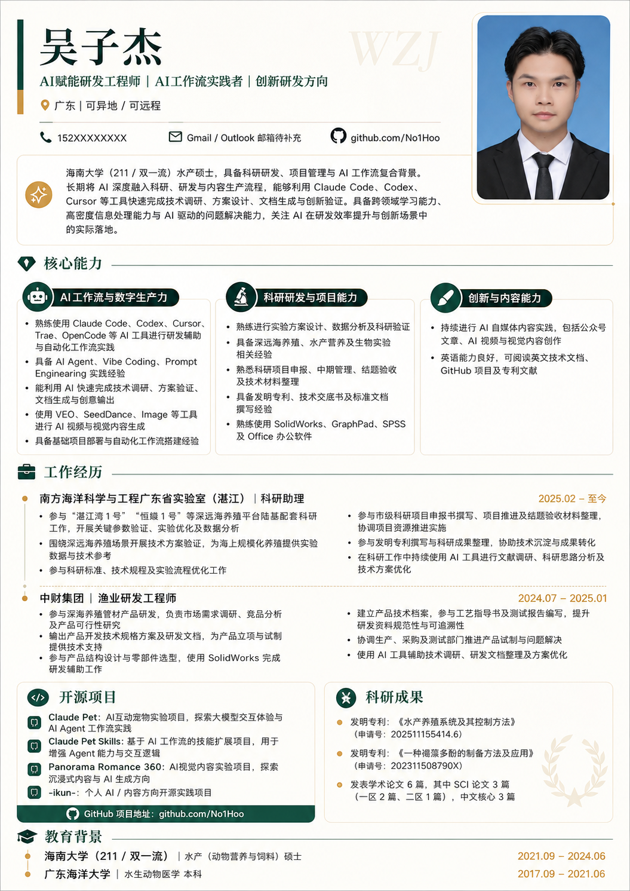

嗨，我是
构建工具，也构建生活。
在互联网公海上拥有一座私人小岛。

Zijie Wu · 吴子杰
About ME!
我是一个全栈工程师，工作在 Linux 桌面，热衷于AI 工具链和机械 CAD的交叉地带。
我相信工具的力量——好的工具能放大人的创造力。模型路由、Agent 系统、参数化建模，都是我在捣鼓的领域。不忙的时候，我喜欢探索开源项目，把各种奇怪的工具组合在一起，看看会发生什么。
这个网站是手工写的，零框架、零构建。它不完美，但它一直在生长，就像我一样。
Journey & Milestones
Works & Projects
Find Me
你发现了一个彩蛋！